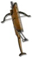

Heyday

King's Nail
Repeating Crossbow
Damage: 8-14 (two-handed)
Required Level: 30
+1 to All Skills
+3-5 to Guided Arrow
+30% Increased Attack Speed
+5% Life stolen per hit
+3% Mana stolen per hit
+50% Extra Gold from Monsters
15% chance to cast level 3 Decrepify on striking
+10-20 to Minimum Damage
+30-50 to Maximum Damage
+100-125% Enhanced Weapon Damage
Unique Crossbow
King's Nail
- Type
- Crossbow
- Base
- Repeating Crossbow
- Tier
- Normal
- Required level
- 30
- Item level
- 25
- Required strength
- 40
- Required dexterity
- 50
- Max sockets
- 5